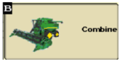
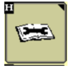
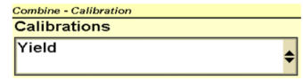
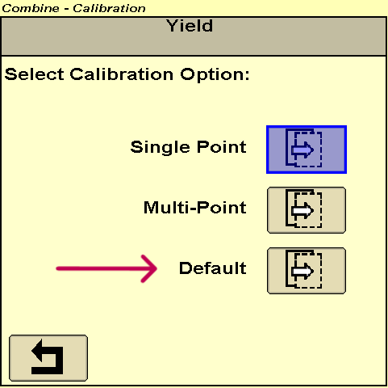

Effacement des poids de calibrage – S600 - Console 2630
Depuis l’écran principal de la console 2630, appuyez sur l’icône Combine (B). 
Appuyez sur l’icône Clé à molette (H). 
Dans le menu "Calibration", appuyez sur le menu déroulant et sélectionnez Yield. 
Appuyez sur l’icône avec un poids suspendu.
Une fois dans le menu de gestion des charges de calibrage, recherchez et sélectionnez l'icône Default.
Valider l’action et les charges de calibrages seront effacées.